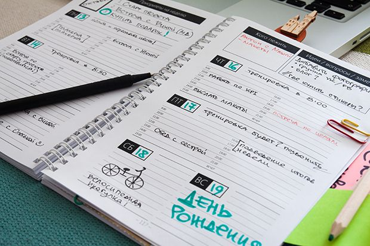
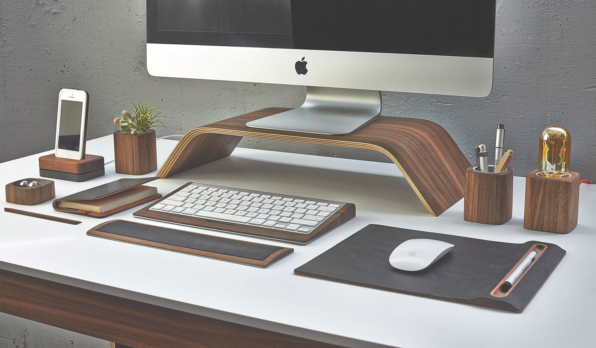
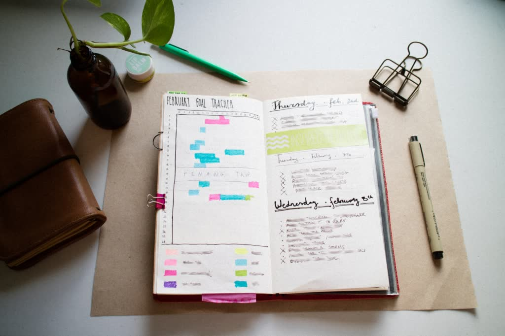

Каждый хочет быть организованным, собранным и пунктуальным. Но, для этого нужно прилагать много усилий, ведь пока самоорганизация войдет в привычку, должен пройти примерно месяц. Самоорганизация может снизить стресс и беспокойство, т. к. вы будете уверенны в своих действиях, планах и их выполнении и размеренном рациональном графике.
"Беспорядок в комнате- беспорядок в голове." Просто уберитесь у себя в комнате: помойте пол, протрите пыль, разберите вещи в гардеробе, разложите тетради и ручки на столе. Важно не только убираться, но и поддерживать порядок. Это будет подсознательно влиять на ваши мысли, ведь наше рабочее место и место для отдыха- основные. И, если в них будет порядок, то и в голове тоже все будет разложено по полочкам.
Ежедневник позволяет записывать свое расписание, заметки, важные и неотложные дела, вести "трекеры". Главное не забывать его заполнять, иначе, все рушится.
Для начала напишите на листочке свои важные планы на весь месяц. Это поможет вам не забыть про них. Затем перерисуйте к себе ежедневник календарь на месяц. Можно купить ежедневники уже с готовыми шаблонами. Распределите все дела на разные дни. Составьте себе "цветную систему":определенные цвета, с помощью которых вы будете разделять планы на разные категории. После составления расписания на месяц преступите к неделям. В недельном расписании должны быть отдельные "окошки" для всех дней недели. В них вы должны записывать поэтапный список того, что надо выполнить за сегоднешний день. Пронумеруйте все пункты. После выполнения каждого пункта, отмечайте его. Так проще увидеть что еще надо выполнить, и какой у вас есть прогресс. Ведите трекеры. Составляйте таблицы на определенный период и отслеживайте что-либо. Режим питания, выполнение работы, прогулки, чтение и массу других занятий. При желании оформляйте все в своем стиле: выделяйте маркерами, приклеивайте стикеры, рисуйте рамки. Яркий дизайн не даст ведению планов наскучить.
